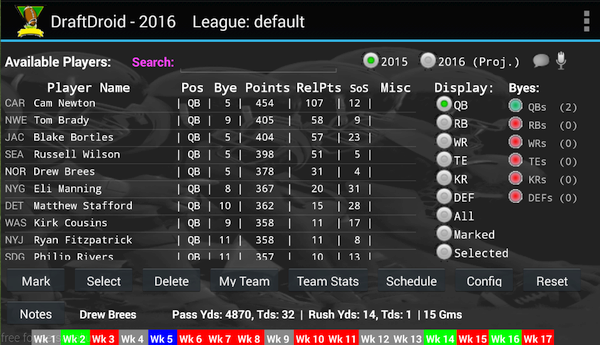

Ideally this app is friendly enough to use without help but just in case...

This screen handles all the selection of players by you and by your opponents. The other screens are for additional information and league point configuration. You select a potential player by clicking on his name in the scrollable list. Additional details for that player appear at the bottom of the screen, including a strength of schedule indicator that player/team/position (Green - easy, Red - hard, Blue - bye week.
You can 'Mark' players you're interested in prior to the draft. If you wish to add the selected player to your team press the 'Select' button. When a league opponent selects a player press the 'Delete' button to remove him from consideration.
In case of an mistaken selection click on 'Selected' in the Display radio button list, select player and click restore. Player will be removed from either your team or from the selected list, as appropriate. Select another player position radio button to view any particular position.
The players lists values are based on last years statistics. The list sortable by selecting the column headers. Details of whether they're in the final year of their contract (CY) or on a new team (TM) are displayed in the Misc column
Some players/rookies who did not play last year may have 2015 estimated stats or just 2016 projections. Rel Points are a relative measure of a player to a player of a different type (i.e. QB vs WR). While a QB may score more total points, the WR may be more valuable in respect to the other remaining WRs (i.e. better grab him while you can!)
Enter text into the search field to filter list down to players whose names contain the entered text (e.g. 'eyton'). Delete chars to restore list.
The 2015 and 2016 (Proj) radio buttons display either last years statistics and equivalent points or the 2016 season projected statistics. The 'Rel Pts' field maps to the selected year
The microphone toggle button turns on/off Text To Speech (TTS) mode. TTS will annunciate
supported DraftDroid events like selecting or deleting players. If your device supports it a beta
version of Speech To Text (STT) is available. If the 'speech bubble' button appears next to the TTS
button your device supports STT. You click on the button and say a command. Do to the nature of Android
speech API the mode goes off after each command. Supported commands are:
The Display radio button list allows selection of players by position, marked players, all grouped together, or a list of already selected players.
The Byes column is a visual aid as to whether your team might have lineup issues during the bye periods. Green indicates you're good, yellow indicates one player short for that position, red two or more, or you haven't selected any players for that position yet.
The 'Reset' button will return the system to the start, clearing all selected players and resetting the point configuration. It does not clear the marked indicator.
This screen allows configuration of the tool to your leagues point system. This may change the order and points of players in the main screen. It most likely doesn't cover every leagues point system but should still provide basic scoring values. The tool doesn't support individual defensive players at this time. Click on fields, enter value and select 'Save' when done.
Displays a scrollable list of players currently on your team and more complete list of statistics. Also details number of players of each on your team and how many players each week you have on bye.
Calculates what your expected best lineup would be and average points scored each week. At this point it follows a 1 QB, 2/3 RB/WR, 1 TE 1 KR and 1 DEF system. In future it will work based on team values set in the configuration screen
This screen just details each teams home/away schedule with bye weeks highlighted.
Suggestions are welcome (complaints not so much, it's free after all). Planned improvements include supporting multiple fantasy teams, tracking opponents teams, adding additional statistical measures, voice input, etc...